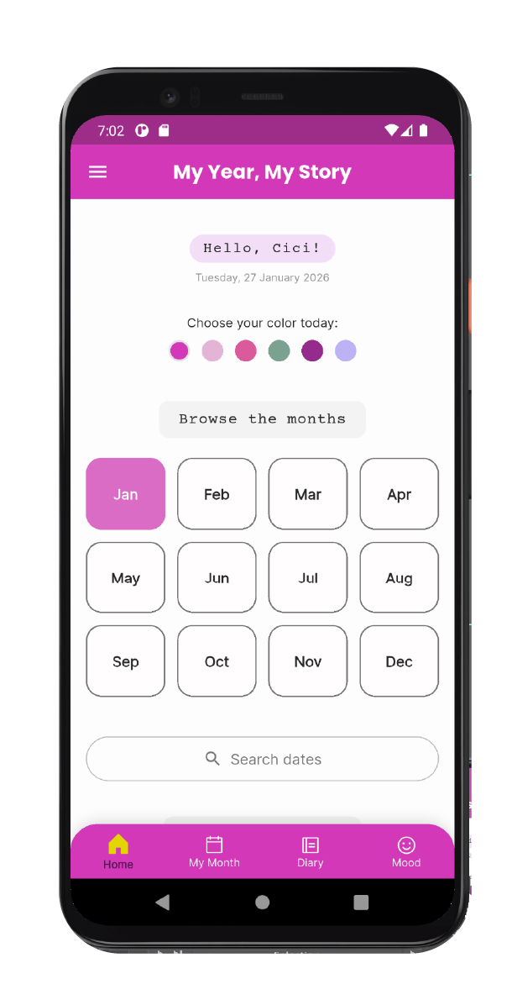

My Year, My Story
"Designed to help people understand themselves, one day at a time."
The Challenge
Growing up involves constant emotional change, but young people are rarely given a calm and accessible space to understand what they are feeling, recognize their progress, and preserve the moments that shape them.
"Every screen is another chapter in a story that's uniquely yours."

The Approach
My Year, My Story was created as a guided digital journal where self-reflection feels natural rather than intimidating. Through mood tracking, daily prompts, monthly goals, gratitude pages, photographs, personal notes, and creative exercises, the app helps users explore their inner world one small moment at a time.
The experience was carefully designed to feel supportive and flexible, giving users enough direction to begin while preserving the freedom to express themselves in their own way.
"Guiding reflection through thoughtful interactions and meaningful experiences."
"Where everyday moments become lasting memories."
The Outcome
Over time, individual entries become something larger: a visual record of emotions, memories, challenges, and personal growth. Each month works as a personal time capsule, helping users recognize patterns, celebrate progress, and understand how their story is changing.
My Year, My Story became an exploration of how digital design can encourage emotional awareness, self-expression, and meaningful reflection without pressure or judgment.